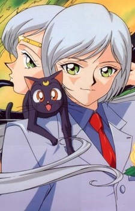

<- Повернутися на головну сторінку
<- Красуня воїн Сейлор Мун
<- Сейлор воїтельки
Ятен Коу

Головна інформація
| Імена |
Ятен Коу, Сейлор Зоряна Цілителька, Сейлор Зоряний Цілитель |
| Японське ім'я |
夜天光 |
| Заняття |
Сейлор воїн, студент, айдол |
| Друзі |
Сейя Коу , Тайкі Коу
|
| Союзники |
Сейлори, Старлайти |
| Перша поява |
1 серія (5 сезон) |
Особистість:
Ятен має неприємний характер: пихатий, холодний, егоїтичний хлопець. Вважається найартистичнішим у айдол-групі "Three lights", і користується немаленькою популярністю серед дівчат. Він з презирством відноситься до фанаток, не любить їх увагу, і викидає листівки з зізнаннями в коханні не читаючи. Його абсолютно не хвилюють інші люди, окрім Сейї і Тайкі. З іншого боку, він любить тварин, допоміг Луні, а також безмежно відданий Принцесі Какю. Дуже переживає через невзаємне кохання Сейї, і навіть забороняв їм бачитися деякий час, щоб другові не було знову боляче. Згодом став коммунікабельнішим та почав спілкуватися як з іншими воїнами, так і нейтрально ставитися до почуттів дівчат
Сім'я:
Немає жодних відомостей. Саме з Сейєю та Тайкі у нього відносини, що схожі на поведінку між братами
Відносини з окремими персонажами:
Сейя та Тайкі Коу - близькі друзі Ятена. Вони повністю підтримують один одного, їх об'єднує вірність Принцесі Какю та ціль відшукати її. Хоча, іноді між ними бувають конфлікти та розбіжності в думках. Час від часу це доходить ледь не до бійок, але завершується примиреннням
Галерея